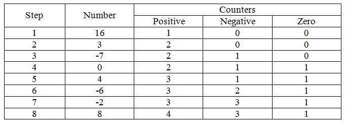
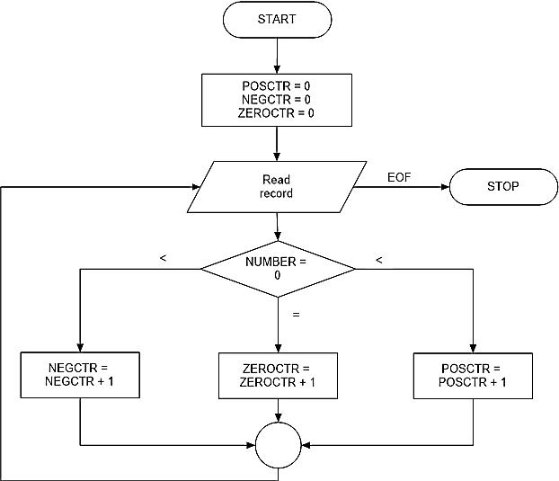

CHAPTER ONE
Demostrate Overall Understanding Of The Programming Process
1. Computer Program
A computer program consists of a group of instructions for a computer that cause it to perform a desired task. A computer program is a collection of instructions that performs a specific task when executed by a computer.
2. Programming Process
The programming process is, therefore, a problem solving process, and it consists of the following activities:
a. Defining the problem:
The definition of the problem begins with a statement of the desired output (results to be produced by the program). That is called defining the problem. :
b. Preparing an algorithm:
A sequence of steps that describe a method for solving a problem is called Algorithm.:
c. Preparing a program flowchart:
A symbolic representation of algorithm is called Program Flowchart.:
d. Coding the program:
Instruction that transfers control to a subroutine is called coding.:
e. Debugging and testing:
Removing the errors from a program is called debugging. Running a program with sample data to identify logic errors is called testing.:
f. Documenting:
Documenting is a name of programming process activities which preparing a written record of all activities associated with the programming process. :
Documentation is a name of document where programming process or using process is written down. The documentation may provide on paper, online or any digital media. User guide or quick reference guide is the example of documentation.
3. Input & Input Device
Data that is to be read and processed by a program; the operation of reading such data is called input. The devices which are used as input peripheral is called input device. Keyboard, Mouse, Scanner etc. are the example of input devices.
4. Output & Output Device
The results of processing by the computer by the computer; the process of producing such results is called output. The devices which are used as output peripheral is called output device. Monitor, Printer, Speaker etc. are the example of output devices.
5. Programmer
The person who writes the program is called Programmer. If the person writes Java program then he is Java Programmer or if the person writes Python program then he is Python Programmer and so on.
6. System Analyst
Someone who plans the collection of equipment, programs, people, and procedures that make up a system is called System Analyst.
7. Computer’s Capability
- Perform arithmetic operations
- Compare two things
- Move data about in its memory
- Input data and output result
8. Initial Algorithm
Much of what we human beings do requires little conscious thought because we use our past experiences. This is called initial algorithm.
9. Refining the Algorithm
After thinking initial algorithm we refine this easier than before for computer understanding purposes which is called refining the algorithm.
10. Counter
A counter is a device for keeping track of the number of times something occurs.
11. Branch
Transfer control to another part of a program is called branch.
12. Two Way Branches
If we transfer control to another part in two ways of a program is called two way branches.
13. Desk Checking the Algorithm
Desk checking is a reviewing process in which a representative sample of data is manually processed through an algorithm, flowchart, pseudo code, or coded program to locate errors.
14. Program Flowcharting Outlines
There are some basic shapes which we are using to build program flowchart is called program flowcharting outlines. The names of basic shapes are: Terminal, Process, Input / Output, Preparation, Decision, Connector, Flowline, Annotation or Comment etc.
15. Numbers Program Algorithm
Step 1: Start
Step 2: Set positive, negative and zero counters to 0
Step 3: Read a card; if there are no more numbers, go to step 7
Step 4: If the number is positive, add one to the positive counter and go to step 2
Step 5: If the number is negative, add one to the negative counter and go to step 2
Step 6: If the number is zero, add one to the zero counter and go to step 2
Step 7: Print counters
Step 8: Stop
16. Numbers Program Desk Checking
Suppose we process the following list of numbers:
16, 3, -7, 0, 4, -6, -2, 8
17. Numbers Program Flowchart
18. Flowcharting Guidelines
Some flowcharting guidelines:
- Flowchart should be clearly identified by an arrow on the flowline.
- Every program flowchart starts and ends with terminal outline.
- Outlines inside words should be meaningful for anyone reading the flowchart.
- A decision outline should be labeled with the appropriate condition.
- Try to leave white space in the flowchart by using connectors instead of flowlines.
- Entering and exiting flowlines should be positioned in the center of an outline.
- We should use annotations to explain anything that may not be obvious.
19. Programming Language
The term programming language usually refers to high-level languages, such as BASIC, C, C++, COBOL, FORTRAN, Ada, and Pascal. Each language has a unique set of keywords (words that it understands) and a special syntax for organizing program instructions.
20. High-Level Programming Language
A programming language in which one source program instruction may be translated into one or more object program instructions and which are relatively easy to learn is called high-level programming language. Some examples are given below.
- BASIC (Beginner’s All-purpose Symbolic Instruction Code)
i. Easy to learn
ii. Easy to use
iii. To use in solving algebraic problems
iv. To handle business data processing
v. Widely used on personal computers
-
COBOL (Common Business Oriented Language)
i. Design for business data-processing
ii. Originally used on large computers
iii. Now available on some personal computers
- c. FORTRAN (Formula Translator)
i. Design for mathematical problem solving
ii. Available on most computers
- d. Pascal
i. General purpose programming language
ii. Available on most computers
- e. RPG II (Report Program Generator)
i. Powerful language for business application
ii. Widely used on smaller business computers
iii. Now available on large computers and some personal computers
21. Compiler
A compiler is a special program that processes statements written in a particular programming language and turns them into machine language or "code" that a computer's processor uses. Compiler is a translator.
22. Generator
In computer science, a generator is a special routine that can be used to control the iteration behavior of a loop. In fact, all generators are iterators. A generator is very similar to a function that returns an array, in that a generator has parameters, can be called, and generates a sequence of values.
23. Assembler
An assembler is a program that takes basic computer instructions and converts them into a pattern of bits that the computer's processor can use to perform its basic operations. Some people call these instructions assembler language and others use the term assembly language.
24. Interpreter
Interpreter is a computer language processor that translates a program line-by-line (statement-by-statement) and carries out the specified actions in sequence. In contrast, an assembler or compiler completely translates a program written in a high-level language (the source program) into a machine-language program (the object program) for later execution. Whereas a compiled-program executes much faster than an interpreted-program, an interpreter allows examination and modification of the program while it is running (executing).